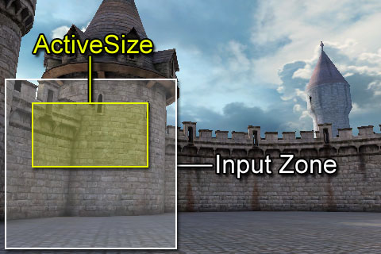
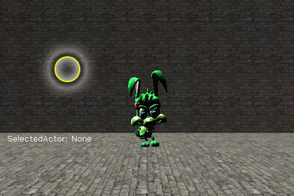
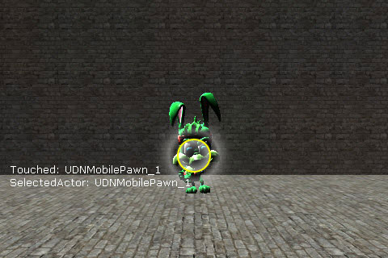
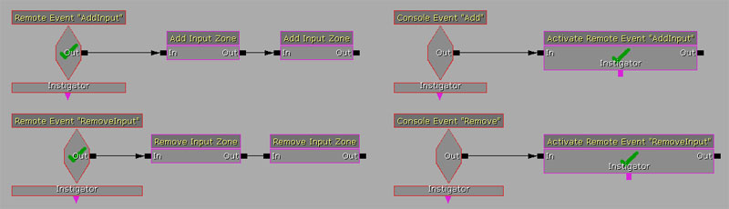
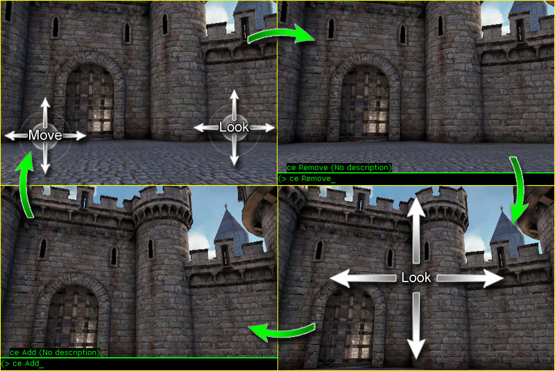
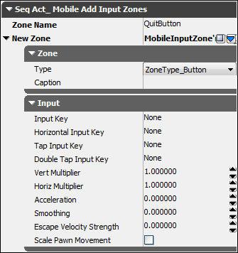
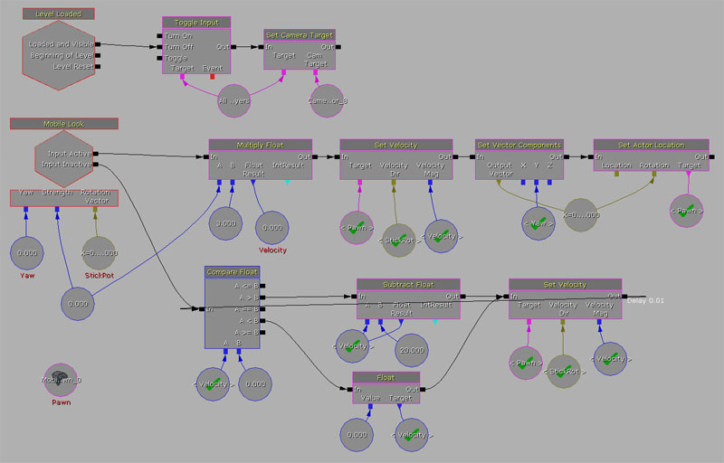
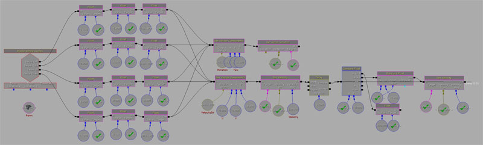

UDN
Search public documentation:
MobileInputSystemJP
English Translation
中国翻译
한국어
Interested in the Unreal Engine?
Visit the Unreal Technology site.
Looking for jobs and company info?
Check out the Epic games site.
Questions about support via UDN?
Contact the UDN Staff
中国翻译
한국어
Interested in the Unreal Engine?
Visit the Unreal Technology site.
Looking for jobs and company info?
Check out the Epic games site.
Questions about support via UDN?
Contact the UDN Staff
モバイル入力システム
概要
デバイス上でタッチ入力およびモーション入力を管理する方法は 3 つあります。最も単純な方法は、事前設計された入力サブシステムと見なすことができる MobileInputZones を使用することです。入力ゾーンによって必要な制御レベルが得られない場合は、MobilePlayerInput クラスに存在するデリゲートをいくつか使用してUnrealscriptコードで入力システム全体を制御することができます。最終的には、Kismet のイベントおよびアクションのセットを使用することによって迅速なプロトタイピングが可能になります。
MobilePlayerInput
MobilePlayerInput クラスは、モバイルデバイス上におけるプレイヤーからの入力すべてに関して中心的な役割を果たします。このクラスは、デバイスのスクリーンからタッチ入力を受け取るとともに、デバイス上で使用可能な各種モーションセンサーからモーション入力を受け取ります。この入力へのアクセスは、プロパティとアクセサ関数 (場合によってはデリゲート) によって実現されます。
MobilePlayerInput は、 GamePlayerController の内部にある クラスとして定義されます。したがって、 GamePlayerController クラスを直接または間接に継承したクラスにおいてのみ使用することが可能です。 MobilePlayerInput クラスを使用できるようにするには、ご自分でカスタマイズした PlayerController クラスにおける defaultproperties (デフォルトプロパティ) ブロックの中にある InputClass プロパティにこの MobilePlayerInput クラスを割り当てます。(なお、当然のことながらこの場合の PlayerController クラスは GamePlayerController を拡張したものです)。
defaultproperties
{
InputClass=class'GameFramework.MobilePlayerInput'
}
MobilePlayerInput プロパティ
メニュー
- InteractiveObject - ユーザーが現在インタラクト (操作) している
MobileMenuObjectです。たとえば、ユーザーがあるボタンを押した場合、指が離れて UnTouch イベントが発生するまで、InteractiveObjectになります。 - MobileMenuStack - レンダリングの対象となり入力を渡す対象となるモバイルのメニューシーンのスタックを保持する配列です。モバイルのメニューシーンに関する詳細は、 Mobile Menu Technical Guide をご覧ください。
モーション
- MobilePitch - デバイスのジャイロスコープによる現在のティルト値です。(利用可能な場合)。
- MobilePitchCenter - デバイスのピッチにおける中央値です。
- MobilePitchMultiplier - デバイスのピッチに用いるスケーリングの係数です。ピッチモーションに対する感度を調整します。
- MobileYaw - デバイスのジャイロスコープによる現在のヨー値です。(利用可能な場合)。
- MobileYawCenter - デバイスのヨーにおける中央値です。
- MobileYawMultiplier - デバイスのヨーに用いるスケーリングの係数です。ピッチモーションに対する感度を調整します。
- MobilePitchDeadzoneSize - 入力として見なされるために、
MobilePitch値が取らなければならないMobilePitchCenterからの距離です。このプロパティが用いられるのは、モーション入力がゲームの制御に使用されている場合です。 - MobileYawDeadzoneSize - 入力として見なされるために、
MobileYaw値が取らなければならないMobileYawCenterからの距離です。このプロパティが用いられるのは、モーション入力がゲームの制御に使用されている場合です。 - DeviceMotionAttitude - デバイスの体勢 (向き) を説明する
Vector(ベクター) です。- X - スクリーンに対して直立する軸を中心とする回転を表します。
- Y - デバイスにジャイロスコープが備わっている場合にのみ有効です。
- Z - デバイスの水平軸を中心とする回転を表します。
- DeviceMotionRotationRate - デバイスの体勢に関する変化速度を保持する
Vectorです。ジャイロスコープが備わっているデバイス上では、値がきわめて正確になります。 - DeviceMotionGravity - デバイスの重力ベクターを保持する
Vectorです。デバイスにジャイロスコープが備わっている場合にのみ有効です。 - DeviceMotionAcceleration - デバイスの現在の直線加速度を保持する
Vectorです。デバイスにジャイロスコープが備わっている場合にのみ有効です。 - bDeviceHasGyroscope - デバイスにジャイロスコープが備わっている場合は TRUE とします。
- DeviceGyroRawData - ジャイロスコープによる生のモーションデータを保持する
Vectorです。値の範囲は、[0.0, 1.0] です。 - bDeviceHasAccelerometer - デバイスに加速度センサーが備わっている場合は TRUE とします。
- DeviceAccelerometerRawData - 加速度センサーによる生のデータを保持する
Vectorです。値の範囲は、[0.0, 1.0] です。- X - ロールを表します。スクリーンに対して直立する軸を中心とする回転を表します。
- Y - ポートレートでのピッチを表します。ポートレートの向きにした場合の水平軸を中心とする回転を表します。
- Z - ランドスケープでのピッチを表します。ランドスケープの向きにした場合の水平軸を中心とする回転を表します。
- MobileSeqEventHandlers - Motion イベントを待機している
SeqEvent_MobileBaseイベントの配列です。-
 注意: 2012年2月時点のUDKは、この変数を使用しています。
注意: 2012年2月時点のUDKは、この変数を使用しています。
-
- aTilt - デバイスの現在の入出力単位を表すVectorです(2012年2月時点のUDKで使用)。
- aRotationRate - ティルトの変化率を表すVectorです(2012年2月時点のUDKで使用)。
- aGravity - デバイスが感知した重力を表すVectorです(2012年2月時点のUDKで使用)。
- aAcceleration - デバイスが感知した直線加速度を表すVectorです(2012年2月のUDKで使用)。
タッチ
- NumTouchDataEntries - 定数です。同時に監視されるタッチの数を設定します。
- Touches - 監視されているタッチを表す、
TouchData構造体の配列です。 - MobileDoubleTapTime - ダブルタップとして登録されるためにタップとタップの間で経過できる最大時間量を表します。
- MobileMinHoldForTap - タップとして登録されるためにタッチした状態が保たれなければならない最小秒数を表します。
- MobileTapRepeatTime - 保持されているタッチのためのタッチイベント送信から次のタッチイベント送信までに経過する時間量を表します。
- bAllowTouchesInCinematic - TRUE の場合は、シネマティックシーケンス中にタッチ入力が許可されて登録されます。
- bDisableTouchInput - TRUE の場合は、タッチが入力として登録されません。
- bFakeMobileTouches - コマンドラインの引数である
-simmobileまたは-simmobileinputによってゲームが起動する場合は TRUE とします。 - MobileInactiveTime - タッチ入力が登録されていない秒数を表します。
- MobileRawInputSeqEventHandlers - 生のタッチイベントを待機している
SeqEvent_MobileRawInputイベントの配列です。
ゾーン
- MobileInputGroups - 利用可能な入力 MobileInputGroups の配列です。
- CurrentInputGroup - 現在アクティブな MobileInputGroup を参照します。
- 注意: この変数は2012年2月時点のUDKで CurrentMobileGroup へと名前が変更されています。
-
- MobileInputZones - 現存する MobileInputZones の配列です。
- MobileInputZoneClasses - MobileInputZones の名前にマッピングされるクラス名の配列です。
- ZoneTimeout - タイムアウトと判断されることなくゾーンに入力がない状態にしておける最大時間量を表します。
MobilePlayerInput のデリゲート
- OnInputTouch() [Handle] [Type] [TouchLocation] [DeviceTimestamp] - タッチイベントが発生したときにエンジンによって呼び出されます。
- OnMobileMotion() [PlayerInput] [CurrentAttitude] [CurrentRotationRate] [CurrentGravity] [CurrentAcceleration] - モーションがデバイス上で発生したときにエンジンによって呼び出されます。 注意: デバイスハードウェアによっては、Gravity (重力) と Acceleration (加速度) が有効ではない場合があります。 注意: この変数は2012年2月時点のUDKで使用されていません。
- PlayerInput - デリゲートを有している
PlayerInputへの参照です。 - CurrentAttitude - デバイスの現在の体勢 (ピッチ、ヨー、ロール) に関する情報を保持する
Vectorです。 注意: ヨーは、デバイスにジャイロスコープが備わっている場合にのみ有効です。また、これらの値はランドスケープ / ポートレートの向きに依存しません。 - CurrentRotationRate - デバイスの体勢に関する現在における変化速度を保持する
Vectorです。ジャイロスコープが備わっているデバイス上では値がきわめて正確になります。 - CurrentGravity - デバイスの重力ベクターを保持する
Vectorです。デバイスにジャイロスコープが備わっている場合にのみ有効です。 - CurrentAcceleration - デバイスの現在における直線加速度を保持する
Vectorです。デバイスにジャイロスコープが備わっている場合にのみ有効です。
- PlayerInput - デリゲートを有している
- OnTouchNotHandledInMenu() - モバイルのメニューが=Touch_Began=が処理されなかった際に呼び出されます。
- OnPreviewTouch() [X] [Y] [TouchpadIndex] - タッチイベントが処理された、されなかった際にそれぞれTRUE、FALSEを返します。
- X - スクリーンスペースのX座標
- Y - スクリーンスペースのY座標
- TouchpadIndex - タッチされたタッチパッドを表します。
MobilePlayerInput の関数
初期化
- InitInputSystem() - 入力システムが作成された後に
PlayerControllerによって呼び出されます。現在は、タッチ入力システムを強制的に初期化します。付加的な初期化機能を実行するには、サブクラスでこの関数をオーバーライドする必要があります。 - ClientInitInputSystem() - 入力システムが作成された後にクライアントによって呼び出されます。現在は、タッチ入力システムを強制的に初期化します。付加的な初期化機能を実行するには、サブクラスでこの関数をオーバーライドする必要があります。
- InitTouchSystem() - モバイルシミュレーションが有効になっている場合、あるいはゲームがモバイルデバイス上で稼働している場合に、タッチ入力システムをセットアップします。
- NativeInitializeInputSystem() - ネイティブ。入力サブシステムの
InitTouchSystem()のネイティブな初期化によって呼び出されます。 - InitializeInputZones() - ゲームタイプから必要な入力ゾーンをクエリするとともに、その入力ゾーンを初期化します。
- NativeInitializeInputZones() - ネイティブ。
InitializeInputZones()に呼び出されます。入力ゾーンをイタレートするとともに現在のデバイスの解像度に基づいて限界を計算することによって、入力ゾーンを初期化します。
入力イベント
- SendInputKey() [Key] [Event] [AmountDepressed] - 入力キーイベント (キーボード上でキーを押下した場合など) を送信します。 これによって、モバイルの入力を標準的なキーボード入力に手動で変換できるようになります。
- Key - イベントが発生したキーの
名前です。(たとえば、KEY_Up や KEY_Down などです)。 - Event - 入力イベントの
EInputEventタイプです。 (IE_Pressed、IE_Released、IE_Repeat_、IE_DoubleClick、IE_Axis) - AmountDepressed - アナログキーのためにキーが押下される量です。
- Key - イベントが発生したキーの
- SendInputAxis() [Key] [Delta] [DeltaTime] - 入力軸のイベントを送信します。たとえば、ジョイスティックやサムスティック、マウスジェスチャーなどが該当します。これによって、モバイルの入力を標準的な制御入力に手動で変換できるようになります。
- Key - 動いた軸の
名前です。(たとえば、KEY_MouseX や KEY_XboxTypeS_LeftX などです)。 - Delta - 軸が動いた量です。
- DeltaTime - 軸に関して最後に更新してから経過した秒数です。
- Key - 動いた軸の
入力ゾーン
- FindZone() [ZoneName] -
MobileInputZonesの配列から名前で入力ゾーンを検索して返します。- ZoneName - 検索する入力ゾーンの名前を指定する
文字列です。
- ZoneName - 検索する入力ゾーンの名前を指定する
- FindorAddZone() [ZoneName] -
MobileInputZonesの配列から名前で入力ゾーンを検索して返します。入力ゾーンが見つからない場合は、新たなゾーンが作成されて、MobileInputZones配列に追加されるとともに、この新たなゾーンへの参照が返されます。- ZoneName - 検索または追加 (またはその両方) の対象となる入力ゾーンの名前を指定する
文字列です。
- ZoneName - 検索または追加 (またはその両方) の対象となる入力ゾーンの名前を指定する
- HasZones() -
MobilePlayerInputが現在入力ゾーンを持っているか否かを返します。 - GetCurrentZones() -
MobileInputZonesの配列として、現在の入力グループに関係するすべての入力ゾーンを返します。 - ActivateInputGroup() [GroupName] - exec. 関数です。新たな入力グループをアクティブに設定します。(したがって入力を受け取ることができるようになります)。
- GroupName - アクティブに設定する入力グループの名前を指定する
文字列です。
- GroupName - アクティブに設定する入力グループの名前を指定する
- SetMobileInputConfig() [GroupName] - exec. 関数です。新たな入力グループをアクティブに設定します。(したがって入力を受け取ることができるようになります)。
- GroupName - アクティブに設定する入力グループの名前を指定する
文字列です。
- GroupName - アクティブに設定する入力グループの名前を指定する
Kismet
- *RefreshKismetLinks() * - レベルの Kismet シーケンスにおけるあらゆる
SeqEvent_MobileBaseイベントとSeqEvent_MobileRawInputイベントを登録し、ハンドラとして割り当てます。 - AddKismetEventHandler() [NewHandler] -
SeqEvent_MobileBaseの Kismet イベントを新たなモバイル モーション イベント ハンドラとして追加します。このハンドラは、モーションが発生したときに入力イベントを受け取ります。 - AddKismetRawInputEventHandler() [NewHandler] -
SeqEvent_MobileRawInputの Kismet イベントを新たなモバイル タッチ イベント ハンドラとして追加します。このハンドラは、タッチが発生したときに入力イベントを受け取ります。
メニューシーン
- OpemMenuScene() [SceneClass] [Mode] - 指定されたクラスの新たなメニューシーンを開きます。開かれたシーンへの参照を返します。
- SceneClass - 開くべきメニューシーンのクラスを指定します。
MobileMenuSceneのサブクラスでなければなりません。 - Mode - オプションの引数です。シーンの
Opened()関数に渡す文字列を指定します。
- SceneClass - 開くべきメニューシーンのクラスを指定します。
- CloseMenuScene() [SceneToClose] - 指定したメニューシーンを閉じます。
- SceneToClose - 閉じるべきシーンを参照します。
- CloseAllMenus() - シーンスタック内のすべてのメニューシーンを閉じます。
- RenderMenus() [Canvas Canvas] [RenderDelta] - エンジンによって呼び出されることによって、毎フレームごとにシーンスタック内のすべてのメニューをレンダリングします。
- Canvas - シーンを描画するために使用する
Canvasを参照します。 - RenderDelta - 最後のレンダリングサイクルから経過した時間を保持します。
- Canvas - シーンを描画するために使用する
- MobileMenuCommand() [MenuCommand] - exec. 関数です。コマンドをスタック内のすべてのシーンに渡します。これは、コマンドが処理されて TRUE が返されるまで実行されます。
- MenuCommand - シーンに渡すべきコマンドを指定する
文字列です。
- MenuCommand - シーンに渡すべきコマンドを指定する
- OpenMobileMenu() [MenuClassName] - exec. 関数です。文字列の形で指定されたクラスのメニューシーンを開きます。
- MenuClassName - 開くべきメニューシーンのクラス名を文字列の形で指定します。
- OpemMobileMenuMode() [MenuClassName] [Mode] - exec. 関数です。オプションのモードを伴って文字列の形で指定されたクラスのメニューシーンを開きます。
- MenuClassName - 開くべきメニューシーンのクラス名を文字列の形で指定します。
- Mode - オプションの引数です。シーンの
Opened()関数に渡す文字列を指定します。
TouchDataEvent
TouchDataEvent 構造体には、特定のタッチハンドルのためにキューされる個々のタッチイベントに関するデータが含まれます。タッチに対応してタッチイベントが検出されるたびに、新たな TouchDataEvent が生成され、この特定のイベントに関するデータが保持されます。これらは入力システムによって、可能な限り速く順番に処理できます。
- EventType - タッチイベントの
ETouchTypeタイプです。 - TouchpadIndex - イベントが生成されたタッチパッドです。
- Location - スクリーン座標内でのタッチイベントの位置を表す
Vector2Dです。(単位はピクセルです)。 - DeviceTime - イベントが発生したときのタイムスタンプです。
TouchData
TouchData 構造体は、特定のタッチに関するすべての情報を、そのライフタイムの期間を通じて (ユーザーが最初にスクリーンにタッチしたときから指をスクリーンから離すときまで) 保持します。デバイス上で現在アクティブなタッチは、 Touches 配列の中に格納されるため、デバイス上におけるタッチ入力の現在の状態にアクセスできるようになります。
- Handle - 各タッチのために一意の識別子を指定します。 * TouchpadIndex - イベントが生成されたタッチパッドです。
- Location - 最新のタッチイベントによると、スクリーンスペース上やタッチパッド上の現在位置を保持する
Vector2Dです。 - TotalMoveDistance - 最初のタッチイベント以来タッチが移動した距離の合計です。(単位はピクセルです)。
- InitialDeviceTime - 最初のタッチイベントが発生したときのタイムスタンプです。
- TouchDuration - タッチがアクティブになってから経過した秒数です。
- MoveEventDeviceTime - このタッチに対応する最新のタッチイベントのタイムスタンプです。
- MoveDeltaTime - タッチが最後に動いたときに、動きのイベント間で経過した秒数です。
- bInUse - TRUE の場合は、タッチ入力が現在使用されています。それ以外の場合は、アクティブではなく新たなタッチに使用することができます。
- Zone - 現在タッチを処理している
MobileInputZoneです。 - State - このタッチに対応した最新のタッチイベントの
EZoneTouchEventタイプです。詳細については、 [[#TouchEvents][タッチイベント] をご覧ください。 - Events - このタッチに対応するすべてのタッチイベントを、ライフタイムに渡って保持する
TouchDataEventsの配列です。 - LastActiveTime - タッチが最後にアクティブであった時間です。ゾーンがタイムアウトしているか否かを決定するのに使用されます。
入力ゾーン
入力ゾーンとは基本的に、タッチスクリーンデバイスから入力を受け取り、それを使用可能なデータに変換するタッチコントロールです。キーバインドが、キー押下を受け取ってそれを変換することによって、ゲームにおいてプレイヤーの動きや他のインゲームのイベントを制御するのと同様に、入力ゾーンもタッチ入力を受け取り、同様の機能を実現することができます。実際、入力ゾーンは同じキーバインドシステムを使用して入力をアクションにバインドしています。(これについては後述します)。
入力グループ
入力グループとは、関連する入力ゾーンの集まりです。たとえば、Epic の「Citadel」という評価用ゲームにおいては、左右のコントロールスティックが 1 つの入力グループに属しています。ゲームにはそれぞれ、任意の数の入力グループを割り当てることができます。またこれらの入力グループのどれであっても、ゲーム中の任意の時点でアクティブにすることができます。入力ゾーンは 2 つ以上の入力グループに属すことができます。これによって、複数のゲームで再利用することができるとともに、同一のゲーム内で複数回使用することができます。MobileInputGroup 構造体は、入力グループを表すために使用されます。この構造体は、単に一意な名前をマッピングすることによって、グループを構成する入力ゾーンの配列をともなったグループを識別するものです。
- GroupName - 入力グループの一意な名前を指定する
文字列です。 - AssociatedZones - 入力グループに属す
MobileInputZonesの配列です。
RequiredMobileInputConfigs 配列に追加します。詳細は、 入力グループの定義 をご覧ください。
MobileInputZone
MobileInputZone クラスは、ユーザーからタッチ入力を受け取って標準的な「UE3」入力 / 軸 イベントに変換するスクリーンのエリアを定義するための基底クラスです。
MobileInputZone のプロパティ
全般
- Type - 入力ゾーンのタイプ (ボタン、ジョイスティック、トラックボール、スライダーなど) を指定する
EZoneTypeです。詳細は、 入力ゾーンのタイプ をご覧ください。 - State - 入力ゾーンの現在の状態を説明する
EZoneStateです。詳細は、 入力ゾーンの状態 をご覧ください。 - SlideType - 入力ゾーンがスライダーの場合 (
Type=ZoneType_Slider) 、ゾーンの方向を説明するEZoneSlideTypeです。 - InputOwner - 入力ゾーンを管理する
MobilePlayerInputです。 - MobileSeqEventHandlers - 入力ゾーンに関連する
SeqEvent_MobileZoneBaseKismet イベントの配列です。
入力
- InputKey - 入力イベント時に、この入力ゾーンから入力サブシステムに送信する入力キーの
名前です。アナログ入力タイプについては、この場合、垂直方向の軸に沿った入力イベントのためのものとなります。 - HorizontalInputKey - 水平方向の軸に沿った入力イベント時に、この入力ゾーンから入力サブシステムに送信する入力キーの
名前です。アナログ入力タイプのためにのみ使用されます。 - TapInputKey - タップ入力時に、この入力ゾーンから入力サブシステムに送信する入力キーの
名前です。 - DoubleTapInputKey - ダブルタップ入力時に、この入力ゾーンから入力サブシステムに送信する入力キーの
名前です。 - VertMultiplier - 垂直方向の軸に沿ったアナログ入力に乗じるスケーリングの係数です。垂直方向の軸上における入力ゾーンの感度を決定します。
- HorizMultiple - 水平方向の軸に沿ったアナログ入力に乗じるスケーリングの係数です。水平方向の軸上における入力ゾーンの感度を決定します。
- Acceleration - トラックボールの入力ゾーンの動きに適用する加速度量 (実際には、動き / 秒 で定義される) です。
- Smoothing - トラックボールの入力ゾーンの動きに適用する入力のスムージング量です。
- EscapeVelocity - タッチが終了した後に適用する垂直および水平方向の入力の動きを保持する
Vector2Dです。これは慣性の動きに似ています。たとえば、iOS デバイス上でリストをスクロールすると、タッチが終了した後でもスクロールが続く挙動が見られますが、それに同じような動きをします。 - EscapeVelocityStrength - 毎更新ごとに使用する脱出速度の量を指定します。この値の範囲は [0.0, 1.0] です。値が大きくなると減衰が早くなります。
- bScalePawnMovement - TRUE の場合は、ゾーンの入力値に対して、PlayerController の Pawn がもつ
MovementSpeedModifier値が乗じられます。 - bQuickDoubleTap - TRUE の場合は、ダブルタップによってタッチイベント時に単純な
DoubleTapInputKeyの押下とリリース (IE_Pressed および IE_Release) が発生します。TRUE でない場合は、ダブルタップによって、タッチイベント時にDoubleTapInputKeyの押下 (IE_Pressed) が発生するとともに、各更新イベント時にDoubleTapInputKeyのリピート (IE_Repeat) が発生し、タッチ解除のイベント時またはキャンセルイベント時にDoubleTapInputKeyのリリース (IE_Release) が発生します。 - TapDistanceConstraint - タップと見なされるために、タッチがタッチイベントからタッチ解除イベントまで動くことができる最大距離です。
- bAllowFirstDeltaForTrackballZone - TRUE の場合は、トラックボールゾーンのための最初の動きによる差分 (delta) が使用されます。TRUE でない場合は、トラックボールゾーンのための最初の動きによる差分は無視されます。これは、初期タッチの差分にとって一貫していない「デッドゾーン」があるデバイスでは便利なものですが、トラックボールのドラッグにおける反応が若干低下します。
- InitialLocation - ゾーン内部で新たなタッチが発生したときにタッチイベントの最初の位置です。
- CurrentLocation - ゾーン内におけるタッチの現在の位置です。ジョイスティックのゾーンとトラックボールのゾーンにのみ適用されます。
- InitialCenter - 境界を考慮に入れた場合の、ゾーンの実際の中心です。
bCenterOnTouch=true(通常はジョイスティックのゾーン) を使用してゾーンをリセットするときに用いられます。。 - CurrentCenter - 入力イベントのための中心として使用される現在の位置です。新たなタッチが発生したときに
bCenterOnTouch=true(通常はジョイスティックのゾーン) が使用されて、ゾーンの最初のタッチ位置に更新されます。 - PreviousLocations - フレーム間で入力をスムージングする際に使用される、ゾーンにおける最新から 6 までのイベントの位置です。ジョイスティックのゾーンとトラックボールのゾーンにのみ適用されます。
- PreviousMoveDeltaTimes - フレーム間で入力をスムージングする際に使用される、ゾーンにおける最新から 6 個までのイベント時間の差分です。ジョイスティックのゾーンとトラックボールのゾーンにのみ適用されます。
- PreviousLocationCount - 現在格納されていてフレーム間のスムージングに使用されている過去のタッチ位置および時間差分の数です。
- LastTouchTime - ゾーンにおける前回のタッチイベントの時間です。タップがダブルタップであるか否かを決定するために使用されます。
- TimeSinceLastTapRepeat - ボタンゾーンにおいて、
InputKeyの前回リピート (IE_Repeat) から経過した時間です。 - bIsDoubleTapAndHold - double-tap (素早いダブルタップ) としては見なされないダブルタップが発生する場合は TRUE です。
DoubleTapInputKeyのリピートとリリース (IE_Repeat, IE_Release) が送信されるようにするために必要となります。 - LastAxisValue - 前回更新からの、キャッシュされた入力値を保持する
Vector2Dです。ジョイスティックのゾーンとトラックボールのゾーンにのみ適用されます。 - TotalActiveTime - ゾーンがアクティブになってから経過した時間量です。
- LastWentActiveTime - ゾーンが前回非アクティブからアクティブに変わった時間です。
位置とサイズ
- [X/Y] - スクリーン座標における入力ゾーンの左上隅の水平および垂直位置です。(ピクセルまたは
bRelative[X/Y]による相対位置で表します)。 - Size[X/Y] - 入力ゾーンの幅と高さです。(ピクセルまたは
bRelativeSize[X/Y]による相対位置で表します)。 - ActiveSize[X/Y] - 「アクティブなゾーン」の幅と高さです。詳細については、 サイズと位置 をご覧ください。
- bRelative[X/Y] - TRUE の場合は、ゾーンの左上隅の水平および垂直位置が、[0.0, 1.0] を範囲とする相対的な値として見なされます。
- bRelativeSize[X/Y] - TRUE の場合は、ゾーンの幅と高さが、[0.0, 1.0] を範囲とする相対的な値として見なされます。
- bActiveSizeYFromX - TRUE の場合は、
ActiveSizeYの値が、ActiveSizeXの値に対する相対値として見なされます。 - bSizeYFromSizeX - TRUE の場合は、
SizeYの値が、SizeXの値に対する相対値として見なされます。 - bAppleGlobalScaleToActiveSizes - TRUE の場合は、水平および垂直方向に対するグローバルなスケーリング係数が、
ActiveSize[X/Y]に適用されます。さまざまな解像度のデバイスやスクリーンサイズが異なるデバイスにおいて、コントロールのサイズを正確なものに保つために便利です。 - bCenter[X/Y] - TRUE の場合は、コンフィグで指定された
[X/Y]値がゾーンの中心となります。この場合、[X/Y]値は左上隅を表しません。その後、[X/Y]値は更新されることによって、実際のゾーンの左上隅を表すようになります。 - bCenterOnEvent - TRUE の場合は、ゾーンの
CurrentCenter(現在の中心) が、すべての新しいタッチイベントの位置に合わせられます。ユーザーのタッチ (ある範囲内で生じる) に自動的に位置を移動するコントロールを作成する場合に便利です。例としては Epic の「Citadel」に置かれているジョイスティックがあげられます。 - ResetCenterAfterInactivityTime -
bCenterOnEventが TRUE の場合かつこの値が非ゼロである場合、ゾーンが非アクティブな状態でこの値の時間分だけ経過すると、CurrentCenter(現在の中心) がInitialCenter(初期の中心) にリセットされます。 - Border - タッチがゾーン内で発生したか否かを決定する際に、範囲として含まれるゾーンの周囲の距離です。
- bFloatingTiltZone - TRUE の場合は、ティルトゾーンが
Size[X/Y]内部で移動します。使用されそうにはありません。
レンダリング
- OverrideTexture[1/2] - ゾーンのテクスチャをオーバーライドするために使用される
Texture2Dsを指定します。 * ボタンのゾーンに関しては、ボタンが非アクティブのときに描画されるテクスチャがOverrideTexture1であり、アクティブなときに描画されるテクスチャがOverrideTexture2です。 * トラックボールおよびジョイスティックのゾーンに関しては、OverrideTexture1がバックグラウンド (「Citadel」では、くぼんで見える円です) として描画され、指の動きに合わせて動く「ハット」部 (実物のジョイスティックでは先端部に相当します) としてOverrideTexture2が描画されます。 * スライダーのゾーンに関しては、OverrideTexture1がスライダーのグラフィックスで、OverrideTexture2は使用されません。 - OverrideTexture[1/2]Name - テクスチャへのフルパスを指定する文字列です。(例: Package.Group.Name)。
- OverrideUVs[1/2] - 描画すべき OverrideTexture[1/2] のサブ領域を記述するために使用されるテクスチャの UV 座標をテクセル (すなわち、テクスチャのピクセル値) で指定します。
- Caption - ゾーンのために表示すべきテキストです。これは現在のところボタンにのみ使用されます。ゾーン内の中心に表示されます。
- Caption[X/Y]Adjustment - ゾーンに置かれた
Captionの位置のための水平および垂直方向のオフセットです。フォントを正しく並べるためにテキストの微調整が可能になります。 - bIsInvisible - TRUE の場合は、ゾーンがレンダリングされます。
- bUseGentleTransitions - TRUE の場合は、ゾーンが視覚的に非アクティブな状態からアクティブな状態に徐々に遷移します。その逆も可能です。TRUE でない場合は、即座に変化します。 注意: これは純粋に視覚上の問題です。実際のゾーンの状態は、タッチが開始または終了すると同時に即座に変化します。
- ActivateTime - ゾーンが視覚的に非アクティブな状態からアクティブな状態に遷移するのに要する時間量です。
- DeactivateTime - ゾーンが視覚的にアクティブな状態から非アクティブな状態に遷移するのに要する時間量です。
- bRenderGuides - TRUE の場合は、デバッグラインがゾーンのためにレンダリングされます。これは現在のところジョイスティックのゾーンのためにのみ使用され、ゾーンの
CurrentCenter(現在の中心) からジョイスティックのハットの位置までラインをレンダリングします。 - RenderColor - ゾーンを描画する際に使用する
カラーです。これは、ゾーンの視覚的な表現を構成するあらゆるイメージやテキストをモジュレート (調整) するものです。MobileHUDにおいて適切なゾーン描画関数が呼び出される前は、Canvas(キャンバス) の描画カラーにこのカラーが設定されます。 - InactiveAlpha - 非アクティブな場合にゾーンを描画するオパシティです。
- AnimatingFadeOpacity - 非アクティブな状態が一定期間続いた後に再センタリングするときに使用される、フェードエフェクトをもつ現在のオパシティです。
- TransitionTime -非アクティブからアクティブな状態に (その逆も可) ゾーンが遷移してから経過した現在の時間量です。
MobileInputZone のデリゲート
- OnProcessInputDelegate() [Zone] [DeltaTime] [Handle] [EventType] [TouchLocation] - ゾーン内で入力イベントが発生した場合に呼び出され、あらゆるゾーンおよびゾーン内の入力のために完全にカスタム化された入力処理が、他のクラスによって扱われ得るようになります。TRUE を返すことによって入力が処理されるものとして認められます。FALSE を返すと、その入力が渡され、ゾーンのタイプに応じて
ProcessTouch()関数で処理されます。- Zone - デリゲートが属す Zone (ゾーン) への参照です。
- DeltaTime - ゾーンで最後に入力イベントが発生してから経過した時間量です。
- Handle - 入力イベントの原因であるタッチの一意な識別子です。
- EventType - 入力イベントの
EZoneTouchEventタイプです。 - TouchLocation - スクリーン座標におけるタッチイベントの水平および垂直位置をピクセル単位で指定する
Vector2Dです。
- OnTapDelegate() [Zone] [EventType] [TouchLocation] - ゾーン内でタップが発生した場合に呼び出され、タップおよびゾーン内のタップのために完全にカスタム化された処理が、他のクラスによって扱われ得るようになります。TRUE を返すことによってタップが処理されるものとして認められます。FALSE を返すと、そのタップが渡され、ゾーンのタイプに応じて
ProcessTouch()関数で処理されます。- Zone - デリゲートが属す Zone (ゾーン) への参照です。
- EventType - 入力イベントの
EZoneTouchEventタイプです。 - TouchLocation - スクリーン座標におけるタッチイベントの水平および垂直位置をピクセル単位で指定する
Vector2Dです。
- OnDoubleTapDelegate() [Zone] [EventType] [TouchLocation] - ゾーン内でダブルタップが発生した場合に呼び出され、ダブルタップおよびゾーン内のダブルタップのために完全にカスタム化された処理が、他のクラスによって扱われ得るようになります。TRUE を返すことによってダブルタップが処理されるものとして認められます。FALSE を返すと、そのダブルタップが渡され、ゾーンのタイプに応じて
ProcessTouch()関数で処理されます。- Zone - デリゲートが属す Zone (ゾーン) への参照です。
- EventType - 入力イベントの
EZoneTouchEventタイプです。 - TouchLocation - スクリーン座標におけるタッチイベントの水平および垂直位置をピクセル単位で指定する
Vector2Dです。
- OnProcessSlide() [Zone] [EventType] [SlideValue] [ViewportSize] - スライダーのゾーン内で入力イベントが発生した場合に呼び出され、スライダーの値にアクセスできるようになります。現在、戻り値は使用されていません。
- Zone - デリゲートが属す Zone (ゾーン) への参照です。
- EventType - 入力イベントの
EZoneTouchEventタイプです。 - SlideValue - スライダーの位置を、通常の待機位置からのオフセット [+/-] で表したものです。単位はピクセルです。
- ViewportSize - 現在のビューポート (例: デバイスのスクリーン) のサイズです。
- OnPreDrawZone() [Zone] [Canvas] -
MobileHUDによってゾーンがレンダリングされる直前に呼び出されます。これによって、ゾーンの描画を、カスタムのゾーンまたは他のActorでオーバーライドすることが可能になります。TRUE を返すことによって標準のゾーンのレンダリングを中止します。- Zone - デリゲートが属す Zone (ゾーン) への参照です。
- Canvas - 描画のために使用する
Canvasを参照します。
- OnPostDrawZone() [Zone] [Canvas] -
MobileHUDによってゾーンがレンダリングされた後に呼び出されます。これによって、ゾーンの描画を、カスタムのゾーンまたは他のActorで補うことができます。- Zone - デリゲートが属す Zone (ゾーン) への参照です。
- Canvas - 描画のために使用する
Canvasを参照します。
MobileInputZone の関数
- *ActivateZone() * -
bUseGentleTransitionsの値に応じて、入力ゾーンの状態を、ZoneState_Activating(ゾーンの状態_アクティブ化)、またはZoneState_Active(ゾーンの状態_アクティブ) に設定します。 - *DeactivateZone() * -
bUseGentleTransitionsの値に応じて、入力ゾーンの状態を、ZoneState_Deactivating(ゾーンの状態_非アクティブ化) またはZoneState_Inactive(ゾーンの状態_非アクティブ) に設定します。 - AddKismetEventHandler() [NewHandler] - ゾーンでタッチ入力が発生したときに、イベントを受け取る入力ゾーンと、新たなモバイル入力の Kismet イベントを関連づけます。
- NewHandler - 新たなハンドラとして追加する
SeqEvent_MobileZoneBaseを参照します。
- NewHandler - 新たなハンドラとして追加する
入力ゾーンのタイプ
- ボタン -
ZoneType_Buttonゾーンタイプは、2 つの状態をもつゾーンです。1 つは pressed (押下状態) で、もう 1 つは unpressed (非押下状態) です。pressed (押下状態) から unpressed (非押下状態) に変化する際に InputKey を送信します。 - ジョイスティック -
ZoneType_Joystickゾーンタイプは、バーチャルなスティックをもつゾーンを作るため、デバイス上で素早くジョイパッド / ジョイスティックのシミュレートが可能になります。垂直軸方向に沿った動きが発生した場合に送信されるバインドは、InputKey が定義します。水平軸方向に沿った動きが発生した場合には、HorizontalInputKey が送信されます。 - トラックボール -
ZoneType_Trackballのゾーンタイプは、一般的なタッチとスワイプを扱うゾーンを作成します。トラックボールゾーンを追加すると、このゾーンを通過させて指をスライドさせることによって、トラックボールを転がすのと同じ効果を得ることができます。上記の ZoneType_Joystick と同様に、InputKey は垂直方向の動きのために使用され、HorizontalInputKey は水平方向の動きのために使用されます。 - スライダー -
ZoneType_Sliderのゾーンタイプは、ロックされた軸に沿ってサブゾーンをスライドさせるために使用することができるゾーンを作成します。SliderZone は、スクリプトのデリゲートとともに使用することによって、その値を管理できるように設計されています。例としては、「Citadel」を参照してください。
入力ゾーンの状態
- Inactive(非アクティブ) - インプットゾーンは現在非アクティブです。
- Activating(起動中) - インプットゾーンは起動中です。
- Active(アクティブ) - インプットゾーンはアクティブです。
- Deactivating(停止中) - インプットゾーンは停止中です。
レンダリングとデザイン
入力ゾーンにオーバーレイ表示をレンダリングするのは、MobileHud クラスによって処理されます。入力ゾーンのデザインを変更する場合は、各種の DrawMobileZone_xxxx 関数をオーバーライドします。
また、基本的なデザイン上のオーバーライドを行うには、ゾーンにおいて次のプロパティを使用します。(プロパティの説明については、 [#ZoneRenderingProperties][MobileInputZone のレンダリング プロパティ]) のセクションをご覧ください)。
- OverrideTexture[1/2]
- OverrideTexture[1/2]Name
- OverrideUVs[1/2]
サイズの変更と位置の変更
ゾーンの位置とサイズは、X および Y 、 SizeX 、 SizeY メンバー変数によって扱われます。サイズの変更と位置の変更については重要な注意事項があります。まずは、マイナスの値についてです。マイナスの値を使って、ビューポートの右 / 底の端から位置を変更したりサイズを変えたりすることができます。たとえば、 SizeX = 32 で X = -32 であるゾーンは、スクリーンの右端に接することになります。次に、これらの値をビューポートのパーセンテージとしてエンジンが使用できるように設定できるフラグがあります。ゾーンが bRelativeX = true となっている場合は、X の値が、ビューポートの SizeX に対するパーセンテージとして受け取られます。最後として、 bSizeYFromSizeX を使用することによって、さまざまな解像度 (例: iPad 対 iPod) に応じて、適切なアスペクト比を確保することができるという点があげられます。
X や Y 、 SizeX 、 SizeY の他に、 ActiveSizeX 、 ActiveSizeY といった値があります。これらのプロパティは「ゾーン内ゾーン」を定義するために使用されます。これは次のようなことを意味します。すなわち、ゾーンの境界は、 X 、 Y 、 SizeX 、 SizeY= プロパティによって定義することができますが、コントロールとして実際に機能する、ゾーンのアクティブな部分は ActiveSizeX 、 ActiveSizeY プロパティによって定義されるということです。通常は「タッチが中心となる」コントロールとともに使用されます。たとえば、Epic の「Citadel」では、スクリーンの特定の領域内でタッチすると、ジョイスティックがその位置まで移動します。

入力ゾーンの追加
各ゾーンはDefaultGame.ini コンフィグファイルで定義されます。 MobileInputZone のシステムは、オブジェクト単位のコンフィグを使用して各種ゾーンを管理およびロードします。すなわち、各入力ゾーンはコンフィグファイルの中においてそれぞれのセクションで定義されることになります。 config 指定子をともなって宣言されたプロパティはどれでも、コンフィグファイル内で入力ゾーンを定義するセクションで設定することが可能です。
モバイルの入力ゾーンを定義する例を次に掲載します。
[UberStickMoveZone MobileInputZone] InputKey=MOBILE_AForward HorizontalInputKey=MOBILE_AStrafe Type=ZoneType_Joystick bRelativeX=true bRelativeY=true bRelativeSizeX=true bRelativeSizeY=true X=0.05 Y=-0.4 SizeX=0.1965 SizeY=1.0 bSizeYFromSizeX=true VertMultiplier=-1.0 HorizMultiplier=1.0 bScalePawnMovement=true RenderColor=(R=255,G=255,B=255,A=255) InactiveAlpha=0.25 bUseGentleTransitions=true ResetCenterAfterInactivityTime=3.0 ActivateTime=0.6 DeactivateTime=0.2 TapDistanceConstraint=5
入力グループの定義
FrameworkGame クラスを拡張したものであれば、どのようなゲームタイプであっても必要なモバイル入力コンフィグのリスト (すなわち入力グループ) を定義することができます。各コンフィグは、それを定義する名前および含まれるべきゾーンのリストから構成されています。入力グループ内で入力ゾーンが指定される順序は、非常に重要です。これによって、どのような順序で入力が入力ゾーンに渡されるかということが定義されるとともに、いつ入力が入力ゾーンに渡され、いつそのゾーンの境界内に入り、いつ処理され、いつ次のゾーンに渡されなくなるかということが定義されます。入力グループが、互いに重なり合う複数のゾーンをもつ場合、問題が生じる可能性があります。たとえば、ある入力ゾーンがフルスクリーンであり、他の入力ゾーンよりも前に追加されたならば、次に続くゾーンは入力をまったく受けないことになります。
次に示すモバイル用入力コンフィグのセクションは、 CastleGame ゲームタイプのためのもので、Epic の「Citadel」で使用されているものです。
[MobileGame.CastleGame]
+RequiredMobileInputConfigs=(GroupName="UberGroup",RequireZoneNames=("MenuSlider","UberStickMoveZone","UberStickLookZone","UberLookZone"))
+RequiredMobileInputConfigs=(bIsAttractModeGroup=true,GroupName="AttractGroup",RequireZoneNames=("MenuSlider","ExitAttractModeZone"))
+RequiredMobileInputconfigs=(GroupName="InitialFlybyGroup")
+RequiredMobileInputConfigs=(GroupName="TapTutorialGroup",RequireZoneNames=("MenuSlider","TapTutorialZone"))
+RequiredMobileInputConfigs=(GroupName="SwipeTutorialGroup",RequireZoneNames=("MenuSlider","SwipeTutorialZone"))
bAllowAttractMode=true
MobileInputZones をロードする必要があるかを見つけ出します。現在のゲームタイプのための各入力ゾーンは、インスタンス化されて、 MobilePlayerInput クラスのローカルのインスタンスに格納されています。ここで重要となるのは、.ini ファイル内におけるオブジェクト単位のコンフィグ作成のために使用される名前を、 RequireZoneNames 配列が保持しなければならないということです。そのコードを見るには、 MobilePlayerInput クラスの InitializeInputZones() をご覧ください。アクティブな入力グループを変更するには、 MobilePlayerInput 上で ActivateInputGroup() を呼び出します。
デバッグ
ゾーンからの入力をデバッグするのは大変な場合があります。私たちはデバッグができる限り簡単なものになるように試みてきました。まず、フル機能のエミュレーションモードを PC で使用することができます。そのためには、次のコマンドライン パラメータを使用してゲームを起動します。-simmobileor
-simmobileinputゲームではマウスを使用して、シングルタッチ環境をシミュレートします。さらに、-wxwindows コマンドライン パラメータを使用すると、次のコンソールコマンドが利用できるようになります。
editobject class=mobileplayerinputこれによって、さまざまな入力プロパティをリアルタイムに閲覧 / 編集することができるようになります。また、デバッグ情報を HUD 上に表示するコンフィグ オプションが複数あります。それらのオプションを以下にあげます。
[GameFramework.MobileHUD] bDebugTouches=true bDebugZones=true bDebugZonePresses=true bShowMotionDebug=trueこれらは
SET コマンドに向いています。(すなわち、 set mobilehud bDebugTouches )。「Citadel」で試してみてください。
また、 UDKRemote を使用することによって、デバイスからの入力を PC 上で稼働しているエンジンに送ることができます。UDKRemote アプリケーションの入手と使用法についての詳細は、 UDKRemote のページを参照してください。
UnrealScript によるモバイル入力
モバイルデバイス上の入力は、
MobilePlayerInput クラスにあるデリゲートを通じて UnrealScript で管理することができます。非常に低レベルな 1つの関数を気に留めておいてください。関数をこのデリゲート指定することによって、モバイルデバイスからのタッチ入力を完全にカスタマイズ処理することができます。 これはUnrealScriptから直接設定が可能です。設定は、 MobilePlayerInput のサブクラス内、ゲームのカスタム化した PlayerController クラス内、あるいはデバイスからの入力を扱う場所であればどこからでも可能です。
タッチ入力
ユーザーがスクリーンに触れた場合は必ず「タッチ」として見なされます。入力システムは同時に複数のタッチを追跡することができます。それぞれのタッチは、ユーザーがスクリーンに触れて追跡され始めてから、ユーザーがスクリーンへのタッチを止めるまで継続します。タッチイベント
タッチ入力が感知されると、イベントが発生しタイプ別に分類されます。分類されたタイプは、タッチイベントへの対応を決定する際に利用されます。タイプは、Interaction.ucで定義されたETouchTypeと命名された列挙型変数に格納されています。- Touch_Began - このイベントタイプは、ユーザーがデバイスに接触またはタッチすると送信されます。デバイスが「タッチ」されるごとに発生するイベントです。
- Touch_Moved - このイベントタイプは、タッチがあった瞬間とタッチが終了した際にフレームを送信します。タッチがあった継続時間を追跡できるイベントです。
- Touch_Ended - このイベントタイプは、タッチ終了時またはユーザーによるデバイス接触が終了した際に送信されます。「タッチ」の終了時に発生するイベントです。.
- Touch_Cancelled - このイベントタイプは、システムのメッセージ表示など、ユーザー以外の外部のコントロールによって「タッチ」が終了した際に送信されます。
- Touch_Stationary - このイベントタイプは、現在使用されていません。
タッチの処理
タッチ入力システムへのエントリーポイントは、MobilePlayerInput クラスにあるデリゲートから入ります。このデリゲートによって、デバイスから供給される生の低レベルのタッチデータにアクセスすることができます。1 つのフレームにつき複数回呼び出されることによって各種タッチ情報を返すことが可能です。ここから得られるデータを監視および管理するのはプログラマーの仕事です。
- OnInputTouch [Handle] [Type] [TouchLocation] [DeviceTimestamp] -
- Handle - このタッチを識別する、
Touches配列に入れるインデックスです。このインデックスはタッチのライフタイムの期間中一意なものですが、タッチごとに一意ではありません。 - Type - タッチイベントの
ETouchTypeタイプです。生成可能なイベントの各種タイプに関する説明については、 Touch Events をご覧ください。 - TouchLocation - デバイスのスクリーン上におけるタッチの水平位置および垂直位置を保持する
Vector2Dです。単位はピクセルです。 - DeviceTimestamp - タッチに関する実際上の低レベルなタイムスタンプです。
- Handle - このタッチを識別する、
選択の例
さまざまなゲームにおいては、ワールド内にある任意のアイテムとインタラクトしたり、どのアイテムをタッチしたかを検出したりできるようにする必要があります。これらは非常に柔軟な方法で実現することができます。それには、MobilePlayerInput クラスから OnInputTouch() デリゲートをインターフェースとともに使用します。インターフェースを使用することによって、「タッチ可能」と見なされるべきクラスにこれらの機能を備えることができます。その際、これら機能をサポートするために必要なコードは非常に簡潔なものになります。
ITouchable インターフェース
ITouchable インターフェースはとてもシンプルなものです。関数 (OnTouch()) を 1 つ宣言します。この関数は、このインターフェースを実装している Actor がタッチされたときは、いつでもカスタムの PlayerController クラス (詳細は下記を参照) から呼び出されます。
Interface ITouchable; function OnTouch(ETouchType Type, float X, float Y);
MobilePlaceablePawn を拡張したクラスが役立つでしょう。
class UDNMobilePawn extends MobilePlaceablePawn implements(ITouchable);
function OnTouch(ETouchType Type, float X, float Y)
{
WorldInfo.Game.Broadcast(self, "Touched:"@self);
}
implements(ITouchable) の部分は、 ITouchable インターフェースに属しているすべての関数をこのクラスが定義する必要があるということを示しています。この場合は、 OnTouch() 関数に当たります。この関数によって、タッチ可能なアイテムとの交信が確実に可能となります。この関数の本体は、単に、アイテムがタッチされたことをメッセージとしてスクリーンに表示するに過ぎません。
PlayerController クラス
オブジェクトを選択するための機能はPlayerController クラスの中で実装します。このクラスは GamePlayerController のサブクラスです。モバイルのタッチ入力を使用するには、 GamePlayerController クラスを拡張することが必要となります。
class UDNMobilePC extends GamePlayerController;
/** Holds the dimensions of the device's screen */ var vector2D ViewportSize; /** If TRUE, a new touch was detected (must be the only touch active) */ var bool bPendingTouch; /** Holds the handle of the most recent touch */ var int PendingTouchHandle; /** Holds the Actor that was selected */ var Actor SelectedActor; /** Maximum distance an Actor can be to be picked */ var float PickDistance; /** Maximum amount the mouse can move between touch and untouch to be considered a 'click' */ var float ClickTolerance; /** Cache a reference to the MobilePlayerInput */ var MobilePlayerInput MPI;
Vectors に変換する関数が新たに定義されています。この Vectors は、 Trace() 関数とともに、何かタッチされたものがあるか否かを判定するために使用されます。
/** find actor under touch location
*
* @PickLocation - Screen coordinates of touch
*/
function Actor PickActor(Vector2D PickLocation)
{
local Vector TouchOrigin, TouchDir;
local Vector HitLocation, HitNormal;
local Actor PickedActor;
//Transform absolute screen coordinates to relative coordinates
PickLocation.X = PickLocation.X / ViewportSize.X;
PickLocation.Y = PickLocation.Y / ViewportSize.Y;
//Transform to world coordinates to get pick ray
LocalPlayer(Player).Deproject(PickLocation, TouchOrigin, TouchDir);
//Perform trace to find touched actor
PickedActor = Trace(HitLocation, HitNormal, TouchOrigin + (TouchDir * PickDistance), TouchOrigin, true);
//Casting to ITouchable determines if the touched actor can indeed be touched
if(Itouchable(PickedActor) != none)
{
//Call the OnTouch() function on the touched actor
Itouchable(PickedActor).OnTouch(ZoneEvent_Touch, PickLocation.X, PickLocation.Y);
}
//Return the touched actor for good measure
return PickedActor;
}
PickActor() 関数に渡すことができるようにします。そのためには、前述したように、 MobilePlayerInput クラスから OnInputTouch() デリゲートを使用する必要があります。まず、このデリゲートに割り当てる関数を定義します。
function HandleInputTouch(int Handle, ETouchType Type, Vector2D TouchLocation, float DeviceTimestamp)
{
local Actor PickedActor;
local int i;
//New touch event
if(Type == Touch_Began)
{
//Specify a new touch has occurred
PendingTouchHandle = Handle;
bPendingTouch = true;
}
//Touch in progress
else if(Type == Touch_Moved)
{
for(i=0; i<MPI.NumTouchDataEntries; i++)
{
//Test distance touch has moved and cancel touch if moved too far; update touch location if not
if(MPI.Touches[i].Handle == PendingTouchHandle && MPI.Touches[i].TotalMoveDistance > ClickTolerance)
{
bPendingTouch = false;
}
}
}
//End of touch
else if(Type == Touch_Ended)
{
//Check if a touch is active
if(Handle == PendingTouchHandle && bPendingTouch)
{
//Get actor under touch
PickedActor = PickActor(TouchLocation);
//Check if actor is touchable and set it as selected; clear current selected if not
if(ITouchable(PickedActor) != none)
{
SelectedActor = PickedActor;
}
else
{
SelectedActor = none;
}
//cancel active touch
bPendingTouch = false;
}
WorldInfo.Game.Broadcast(self, "SelectedActor:"@SelectedActor);
}
}
HandleInputTouch() 関数が呼び出されるようにするには、 OnInputTouch() デリゲート に割り当てられる必要があります。
event InitInputSystem()
{
Super.InitInputSystem();
//Get a reference to the local MobilePlayerInput
MPI = MobilePlayerInput(PlayerInput);
//Accessing the input handler function to the delegate
MPI.OnInputTouch = HandleInputTouch;
//get the screen dimensions (used to transform to relative screen coords for the DeProject)
LocalPlayer(Player).ViewportClient.GetViewportSize(ViewportSize);
}
InitInputSystem() イベントがエンジンによって呼び出されて、入力システムが初期化されます。 Super.InitInputSystem(); の呼び出しに先立って、システムが初期化されます。また、ローカルの MobilePlayerInput がアクセス可能であるため、 HandleInputTouch を割り当てるべき OnInputTouch デリゲートに割り当てることが可能となります。
最後に、デフォルトの値が必要なプロパティにデフォルト値を設定します。
defaultproperties
{
PickDistance=10000
ClickTolerance=5
InputClass=class'GameFramework.MobilePlayerInput'
}
ゲームタイプ
当然のことながら、オブジェクトの選択に使用されるこの新たな機能を含むPlayerController クラスが使用されなければなりません。 簡単なサンプルのゲームタイプを以下に掲載します。このサンプルでは、強制的に新たな PlayerController が使用されるようになっています。
class UDNMobileGame extends FrameworkGame;
defaultproperties
{
PlayerControllerClass=class'UDNMobileGame.UDNMobilePC'
DefaultPawnClass=class'MobileGame.MobilePawn'
HUDType=class'GameFramework.MobileHUD'
bRestartLevel=false
bWaitingToStartMatch=true
bDelayedStart=false
}
DefaultEngine.ini ファイルを編集することによって、デフォルトで使用される新たなゲームタイプを指定します。
[Engine.GameInfo] DefaultGame=UDNMobileGame.UDNMobileGame DefaultServerGame=UDNMobileGame.UDNMobileGame DefaultGameType="UDNMobileGame.UDNMobileGame"
テスト
ごくシンプルなテスト用マップが、PlayerStart と UDNMobilePawn を伴ってセットアップされています。 UDNMobilePawn は Jazz Jackrabbit の骨格メッシュを使用して PlayerStart の前に配置されています。
 まず、Jazz から離れた位置でスクリーンがタッチされます。結果は、タッチされているアイテムがないということになります。
まず、Jazz から離れた位置でスクリーンがタッチされます。結果は、タッチされているアイテムがないということになります。

次に、Jazz の真上のスクリーンにタッチしてみます。結果は、予想どおり Jazz がタッチされて選択されたことになります。
モーション入力
モーション入力とは、入力の手段としてデバイス自体の向きと動きを利用することです。デバイスの種類によって、異なるタイプのモーション入力がサポートされています。(あるいはまったくサポートされていません)。加速度センサーが備わっているデバイスは基本的な方向と回転に関するデータを提供します。一方、ジャイロスコープなどの、より高度な機能をもつデバイスでは、直線的なモーションなどのデータがこれに加わります。その場合、方向と回転の入力データの精度も向上します。モーション入力データは、=PlayerInput= のプロパティから直接アクセスが可能です。ティルト
デバイスのティルトとは、その方向を言います。デバイスの数々の軸を中心に様々な方向へ回転する毎に、ティルトのピッチおよびヨー、ロール値が報告されます。(通常は、Vector の形式で報告されます)。これらの回転速度値は、ゲーム上のアクションやゲームプレイの要素を動作させるために利用されます。加速度センサーが備わっているデバイスであれば、ティルトに関するモーションデータが利用できます。
*PlayerInput.aTilt*に格納されます。値はUnreal rotatorユニットに格納されます。
回転速度
回転速度とは、デバイスのティルトが変化する速度のことです。デバイスの方向が変化した場合、軸を中心にした回転速度が、デバイスによって報告される回転速度値になります。このデータはVector の形式で表され、ピッチおよびヨー、ロールの変化速度が表現されます。回転速度データは、加速度センサーが付いているデバイス上で利用することができますが、ジャイロスコープが備わっている場合は精度が格段に向上します。
この値は PlayerInput.aRotationRate に格納されます。
加速度
加速 (度) とは、デバイスの直線的なモーションのことを指します。デバイスが複数ある軸のいずれかに沿って空間を移動すると、この直線的なモーションは加速度データとしてVector の形式で報告されます。このタイプのモーション入力は、ジャイロスコープが備わっているデバイスでのみ使用することができます。
重力
デバイスによっては重力も感知します。 値は、*PlayerInput.aGravity* に格納されます。Kismet を使用したモバイル入力
Kismet は、入力のセットアップと管理に特有なアクションとイベントを提供することができます。これが便利になるのは、1 度限りのレベルをゲームに作る場合や、.ini ファイルを編集したくない場合、また、レベル固有の入力が必要となる場合です。 モバイル入力に関係する Kismet のオブジェクトについての完全なレファレンスは、 Mobile Kismet Reference に掲載されています。
Kismet を使用して入力ゾーンを管理する
Kismet 内部で入力ゾーンを管理する方法はいくつかあります。モバイルアクションを使用すると、個々の入力ゾーンを追加 / 削除したり、すべての入力ゾーンを一挙にクリアしたりすることが可能となります。入力ゾーンの追加と削除
Kismet から直接、入力ゾーンを追加 / 削除するのは簡単です。それには、 Clear Input Zones 、 Add Input Zones 、 Remove Input Zones といったモバイル入力アクションを使用します。この方法は、素早い試作を行う場合や、レベル固有の特化された入力を作成する場合に特に便利です。入力ゾーンの試作やテストを行う場合に、エディタを閉じて .ini ファイルを編集し、エディタを再度開いてレベルを再度起動する必要がないため、時間節約のためだけであっても Kismet を通じて入力ゾーンを管理することが非常に有益となります。 Add Input Zone によって、入力ゾーンの配置、サイズ、その他操作に必要となる重要なプロパティを完全に制御することができるようになります。また、これらのアクションを使用して、プレイ中に使用可能な入力ゾーンを制限 / 再構成してユーザー体験をカスタマイズすることが可能です。たとえば、特定のレベルでイベントが発生して、プレイヤーが非常に特殊な入力方法を利用しなければならない場合があるとします (その間、ゲームで本来使用される通常の入力方法がすべて無効になるとします)。このような場合は、上記アクションを使用することによって簡単に実現することができます。 次のシンプルな例では、デフォルトの MobileGame から通常の入力ゾーンを取り上げて、プレイ中に変更できる機能を付け加えることによってプレイヤーによる入力の選択を制限し、その後にデフォルトの入力に復帰させています。 Kismet シーケンス: （フルサイズの表示には画像をクリック）
このシーケンスのロジックは、以下の通り、かなり単純です。-
RemoveInputイベントシーケンスがUberStickMoveZoneおよびUberStickLookZoneのジョイスティック入力ゾーンを削除し、UberLookZoneのトラックボール入力ゾーンだけを残すことによって、見回すことができるようにしています。 -
AddInputイベントシーケンスがUberStickMoveZoneおよびUberStickLookZoneのジョイスティック入力ゾーンを追加する (元に戻す) ことによって、通常の制御をプレイヤーに回復させています。 - 2 つの Console Event (コンソールイベント) によって、素早くリモートイベントシーケンスをトリガーしています。この場合、
CE ADDまたはCE REMOVEが入力されます。

 次は、このシーケンスが実行されている様子をプレビューしたものです。
次は、このシーケンスが実行されている様子をプレビューしたものです。

ボタン入力ゾーンの操作
ボタン入力ゾーンからの入力は Mobile Button Access イベントによって処理することができます。このアクションを使用すると、ユーザーによるボタンのタップに基づいて、レベル内での動作を実行することが可能になります。監視されるボタン入力ゾーンは、当該のゲームタイプの DefaultGame.ini ファイルで定義することができます。あるいは、 Add Input Zone アクションを使用して、完全にカスタム化されたボタンとして追加することができます。 次の例では、簡単な Kismet シーケンスを使用して、コンソールイベントに応じてボタン入力ゾーンを追加し、ボタンからの入力を待機しています。ボタンが押されると、コンソールコマンドが送られてゲームが閉じます。 Kismet シーケンス: （フルサイズの表示には画像をクリック） 以下は、 Add Input Zone アクションと Mobile Button Access イベントのためのプロパティです。 (クリックするとすべてのプロパティを見ることができます)
 次は、このシーケンスが実行されている様子をプレビューしたものです。
（フルサイズの表示には画像をクリック）
次は、このシーケンスが実行されている様子をプレビューしたものです。
（フルサイズの表示には画像をクリック）

ジョイスティック入力ゾーンの操作
ジョイスティック入力ゾーンからの入力は、 Mobile Input Access および Mobile Look を使って Kismet で直接処理することができます。 Mobile Input Access は、かなり汎用的なイベントです。これによって、軸や中心の値といったジョイスティックの生の入力データにアクセスすることができます。 Mobile Look は、それよりも特化されたイベントです。Yaw (ヨー) や Strength (強さ)、 Rotation (回転) といったより特殊で非常に有用なデータを出力します。このイベントを使用すると、容易に入力をジョイスティックから得ることができ、その入力を利用してゲーム内のキャラクターを制御することができるようになります (プロトタイプあるいはレベル固有のプレイヤーの制御のために)。
次の例では、単一のジョイスティックによる移動を実装しています。左スティック (通常、単純な方向をともなった移動に使用されます) が、プレイヤーの移動する方向だけではなく回転についても制御しています。これによってプレイヤーは常に自分が動く方向に向き合うことになります。また、この例では、Kismet を使用して、マップ内に作成されたカスタマイズされたカメラのセットアップとともに配置可能 (placeable) な Pawn が使用されていることにも注目してください。
Kismet シーケンス:
（フルサイズの表示には画像をクリック）

このシーケンスのロジックは次の通りです。- Level Loaded イベントがプレイヤーの入力を無効にしてトップダウン (上方からの視点) のカメラを設置します。
- Input Active の出力が、
Strength(強さ) とRotation(回転) の変数を使用して、プレイヤーのVelocity(速度) (方向と大きさ) を計算します。 - Input Active の出力が
Yaw(ヨー) の変数を使用して、プレイヤーのRotation(回転) を計算します。 - Input Inactive の入力が、プレイヤーの
Velocity(速度) を下げるシーケンスを使用して、プレイヤーが減速している様子を表現します。
 次は、このシーケンスが実行されている様子をプレビューしたものです。
(クリックすると再生することができます。ダウンロードするには、右クリック > 名前を付けて保存 を選択します。)
次は、このシーケンスが実行されている様子をプレビューしたものです。
(クリックすると再生することができます。ダウンロードするには、右クリック > 名前を付けて保存 を選択します。)

Kismet のタッチ入力イベントを操作する
生のタッチ入力および単純なスワイプの検知が Kismet では可能です。そのためには、 Mobile Raw Input Access と Mobile Simple Swipes イベントを使用します。 Mobile raw Input Access (モバイルの生の入力アクセス) のイベントによって、Kismet 内部でごく汎用的な入力データにアクセスすることができます。デバッグする際やカスタムの入力スキームをプロトタイピングする際に役立ちます。 Mobile Simple Swipes (モバイル シンプル スワイプ) イベントによって、Kismet 内部で基本的なスワイプ検知ができるようになり、スワイプタッチに基づくカスタムのプレイヤー入力が可能になります。 次の例では、シンプルなスワイプの検知を使用することによって、配置可能な Pawn キャラクターの移動と回転をコントロールしています。このシーンでは他の入力がすべて無効になっています。この例では配置可能なプレイヤーを使用しましたが、同様の設定を使って、パズルのピースやプレイヤーによって動かさなければならない岩などのオブジェクトをコントロールすることができます。 Kismet シーケンス: （フルサイズの表示には画像をクリック）
このシーケンスのロジックは次のとおりです。- Mobile Simple Swipes イベントの各出力が、方向と回転の変数をセットします。
- 方向と回転の変数が使用されて、速度と回転のベクター変数が作成されます。
- 回転のベクターが使用されて、配置可能な Pawn キャラクターの
Rotation(回転) がセットされます。 - 方向のベクターと速度の大きさを表す変数が使用されて、配置可能な Pawn キャラクターの
Velocity(速度) がセットされます。 -
Velocity(速度) が落とされて、プレイヤーが減速している様子が表現されます。
 次は、このシーケンスが実行されている様子をプレビューしたものです。
(クリックすると再生することができます。ダウンロードするには、右クリック > 名前を付けて保存 を選択します。)
次は、このシーケンスが実行されている様子をプレビューしたものです。
(クリックすると再生することができます。ダウンロードするには、右クリック > 名前を付けて保存 を選択します。)

Kismet のモーション入力イベントを操作する
Kismet では、 Mobile Motion Access イベントを使用してモーション入力データにアクセスすることができます。このイベントは、回転の値と差分 (デルタ) という形態でモーションデータを出力します。状況次第でこのデータは、デバッグやプロトタイピングのために使用したり、レベル内においてユニークで特化された入力を作成するために使用したりすることができます。ただし、このデータはまったくの生であるため、複雑な制御スキーム用に Kismet 内部で活用するには、ある程度加工する必要があります。このイベントを使ってカスタムのコントロールを作成するには、カスタムの Kismet オブジェクトと計算がさらに必要となるでしょう。 次の例では、Kismet 内部でモーション入力を使用して、配置可能な Pawn キャラクターの「シンプルな」移動をコントロールしています。(「シンプルな」というようにカギカッコで囲んだ理由は、シーケンスが実際以上に粗末に見えますが、実のところはシンプル以外の何ものでもないということを理解していただきたいからです)。 Kismet シーケンス: （フルサイズの表示には画像をクリック） このシーケンスのロジックは次の通りです。
このシーケンスのロジックは次の通りです。
-
Roll(ロール) の値が正規化されて、[0.0, 1.0] の範囲に固定されて、デッドゾーンが計算されます。 -
Pitch(ピッチ) の値が正規化されて、[0.0, 1.0] の範囲に固定されて、デッドゾーンが計算されます。 - 最終的な
RollとPitchの値が用いられて、キャラクターの速度 (方向と大きさ) がセットされます。


{kind=link}
{kind=link}
{kind=link}
{kind=link}